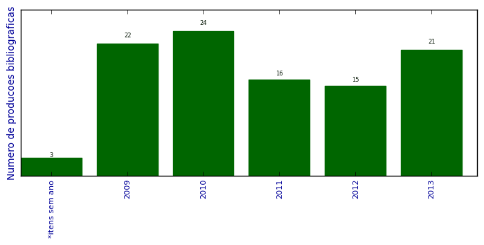

UFSM - Análise do Lattes
Total de produção bibliográfica

Número total de itens: 101
2013
| 1. | ABREU, R. ; PEIXOTO, P.. De quem é o património imaterial? Reflexões em torno do património nos 10 anos da Convenção do Património Imaterial. 2013. Apresentação de Trabalho/Comunicação |
| 2. | BENAVENTE, A. ; ANIBAL, G. ; JACINTO, M. ; PEIXOTO, P. ; MANITA, R. ; NOGUEIRA, R. ; QUEIROZ, S. ; MACARA, T. ; GRACA, V.. Educação: Levanta-te e Luta! 2 anos de governo de direita ao serviço da troika. Lisboa. 2013. Relatório de Publicação online [ citações Google Scholar | citações Microsoft Acadêmico | busca Google ] |
| 3. | CARDIELOS, J. P. ; LOBO, R. ; PEIXOTO, P. ; MOTA, E.. Coimbra: city searching for a river. Em: Romeo Farinella. (Org.). Acqua come patrimonio: Esperienze e savoir faire nella riqualificazione delle città d acqua e dei paesaggi fluviali. 1ed.Roma. : ARACNE editrice. 2013.p. 207-226. [ citações Google Scholar | citações Microsoft Acadêmico | busca Google ] |
| 4. | CARDIELOS, J. P. ; LOBO, R. ; PEIXOTO, P. ; MOTA, E. ; DUXBURY, N. ; CAIADO, P.. : Mondego: the dull murmur of the river. Em: Romeo Farinella. (Org.). Acqua come patrimonio: Esperienze e savoir faire nella riqualificazione delle città d acqua e dei paesaggi fluviali. 1ed.Roma. : ARACNE editrice. 2013.p. 107-126. [ citações Google Scholar | citações Microsoft Acadêmico | busca Google ] |
| 5. | ESTEVES, D. ; GONCALVES, N. I. ; PEIXOTO, P.. Os regulamentos de prestação de serviço docente. Ensino Superior - Revista do SNESup, Lisboa, p. 27-29, 04 jul. 2013. [ citações Google Scholar | citações Microsoft Acadêmico | busca Google ] |
| 6. | GAMA, P. ; ALMEIDA, F. ; SEIXAS, A. M. ; PEIXOTO, P. ; ESTEVES, D.. Ethics and academic fraud among higher education engineering students in Portugal. 2013. Apresentação de Trabalho/Conferência ou palestra |
| 7. | GAMA, P. ; ALMEIDA, FILIPE ; SEIXAS, A. M. ; PEIXOTO, P. ; ESTEVES, D.. Ethics and academic fraud among higher education engineering students in Portugal. Em: Conference Proceedings of 1st International Conference of the Portuguese Society for Engineering Education (CISPEE), 2013. [ citações Google Scholar | citações Microsoft Acadêmico | busca Google ] Qualis: Não identificado (Conference Proceedings of 1st International Conference of the Portuguese Society for Engineering Education (CISPEE)) |
| 8. | GAMA, PAULO ; PEIXOTO, PAULO ; SEIXAS, ANA MARIA ; ALMEIDA, FILIPE ; ESTEVES, DENISE. A ética dos alunos de administração e de economia no ensino superior. RAC. Revista de Administração Contemporânea (Online). v. 17, p. 620-641, 2013.  [ citações Google Scholar | citações Microsoft Acadêmico | busca Google ] Qualis: B4 (RAC. Revista de Administração Contemporânea (Impresso)) |
| 9. | Lopes Marta ; ANTUNES, C. H. ; MARTINS, N. ; PEIXOTO, P. ; SAO, M. ; BREDA, J.. ENERGY BEHAVIOUR CHANGES DURING THE TRANSITION TO SMART(ER) GRIDS: A KEY TO FOSTER HIGHER LEVELS OF ENERGY EFFICIENCY. 2013. Apresentação de Trabalho/Comunicação |
| 10. | PEIXOTO, P.. A cidade performativa na era da economia das experiências. Em: Carlos Fortuna, Lucia M. M. Bógus, Maria Amélia Jundurian Corá e José Simões de Almeida Junior (Orgs.). (Org.). Cidade e Espetáculo - A cena teatral luso-brasileira contemporânea. 1ed.São Paulo. : EDUC. 2013.p. 141-151. [ citações Google Scholar | citações Microsoft Acadêmico | busca Google ] |
| 11. | PEIXOTO, P.. Sedentários a toda a velocidade. Em: Geraldo Pontes; Myrian Santos; Rogério Ferreira de Souza e Victor Hugo Adler Pereira. (Org.). Cultura, memória e poder. 1ed.Rio de Janeiro. : EdUERJ. 2013.p. 47-67. [ citações Google Scholar | citações Microsoft Acadêmico | busca Google ] |
| 12. | PEIXOTO, P.. The social uses of rivers. Em: Romeo Farinella. (Org.). Acqua come patrimonio: Esperienze e savoir faire nella riqualificazione delle città d acqua e dei paesaggi fluviali. 1ed.Roma. : ARACNE editrice. 2013.p. 64-79. [ citações Google Scholar | citações Microsoft Acadêmico | busca Google ] |
| 13. | PEIXOTO, P.. A nova condição dos professores universitários. A Cabra, Coimbra, p. 22-22, 05 maio 2013. [ citações Google Scholar | citações Microsoft Acadêmico | busca Google ] |
| 14. | PEIXOTO, P.. Tudo o que é sólido se sublima no ar: políticas públicas e gestão do patrimônio. 2013. Apresentação de Trabalho/Conferência ou palestra |
| 15. | PEIXOTO, P.. O património local em contexto global: os desafios do património mundial no século XXI. 2013. Apresentação de Trabalho/Seminário |
| 16. | PEIXOTO, P.. Orgazinar, citar e referenciar biblofraficamente com o Zotero. 2013. Curso de curta duração ministrado/Outra [ citações Google Scholar | citações Microsoft Acadêmico | busca Google ] |
| 17. | PEIXOTO, P.. Ferramentas de Gestão Bibliográfica. 2013. Curso de Formação [ citações Google Scholar | citações Microsoft Acadêmico | busca Google ] |
| 18. | PEIXOTO, P. ; FERREIRA, C. ; ESTEVES, D. ; MOURA, A. ; SILVA, S.. Estudo de avaliação dos impactos da mobilidade para estágios. 2013. Apresentação de Trabalho/Seminário |
| 19. | PEIXOTO, P. ; PROVIDENCIA, P. ; ABRANTES, J.. Dos pigmentos tradicionais às cores sintéticas a sustentabilidade da paisagem urbana no centro histórico de Coimbra. Em: Atas do III Congreso Iberoamericano y XI Jornada Técnicas de Restauración y Conservación del Patrimonio, 2013. [ citações Google Scholar | citações Microsoft Acadêmico | busca Google ] Qualis: Não identificado (Atas do III Congreso Iberoamericano y XI Jornada Técnicas de Restauración y Conservación del Patrimonio) |
| 20. | PEIXOTO, P. ; PROVIDENCIA, P. ; ABRANTES, J.. Dos pigmentos tradicionais às cores sintéticas a sustentabilidade da paisagem urbana no centro histórico de Coimbra. 2013. Apresentação de Trabalho/Congresso |
| 21. | SANTOS, M. ; PEIXOTO, P.. Patrimónios mundiais: fragmentação e mercantilização da cultura. Em: Geraldo Pontes; Myrian Santos; Rogério Ferreira de Souza e Victor Hugo Adler Pereira. (Org.). Cultura, memória e poder. 1ed. : EdUERJ. 2013.p. 233-244. [ citações Google Scholar | citações Microsoft Acadêmico | busca Google ] |
2012
| 1. | CIFELLI, G. ; PEIXOTO, P.. Centros históricos e turismo patrimonial: o pelourinho como exemplo de uma relação contraditória. Sociologia (Porto). v. XXIV, p. 35-54, 2012. [ citações Google Scholar | citações Microsoft Acadêmico | busca Google ] Qualis: Não identificado (Sociologia (Porto)) |
| 2. | DUXBURY, N. ; FORTUNA, C. ; BANDEIRINHA, J. A. ; PEIXOTO, P.. Em torno da cidade criativa. Revista Crítca das Ciências Sociais. v. 99, p. 5-8, 2012. [ citações Google Scholar | citações Microsoft Acadêmico | busca Google ] Qualis: B3 (Revista Crítica de Ciências Sociais) |
| 3. | DUXBURY, N. ; FORTUNA, C. ; BANDEIRINHA, J. A. ; PEIXOTO, P.. Creative Cities Network e Criaticidades- Cidades criativas no brasil. Coimbra: CES. 2012. Entradas na secção "Espaço virtual" da Revista Crítica das Ciências Sociais [ citações Google Scholar | citações Microsoft Acadêmico | busca Google ] |
| 4. | DUXBURY, N. ; FORTUNA, C. ; BANDEIRINHA, J. A. ; PEIXOTO, P.. Em torno da cidade criativa. Introdução ao nº 99 da Revista Crítica de Ciências Sociais, Coimbra, 2012. (Prefácio, Pósfacio/Introdução).. Coimbra: CES. 2012. Prefácio, Pósfacio/Introdução).. Coimbra: CES, 2012 (Organização do nº 99 da Revista Crítica das Ciências Sociais [ citações Google Scholar | citações Microsoft Acadêmico | busca Google ] |
| 5. | DUXBURY, N. ; FORTUNA, CARLOS ; BANDEIRINHA, J. A. ; PEIXOTO, P.. Em torno da cidade criativa. Coimbra. 2012. Prefácio, Pósfacio/Introdução [ citações Google Scholar | citações Microsoft Acadêmico | busca Google ] |
| 6. | FORTUNA, C. ; GOMES, C. S. ; FERREIRA, C. ; ABREU, P. ; PEIXOTO, P.. A cidade e o turismo: dinâmicas do turismo urbano em Coimbra. 1 ed. 2012. . [ citações Google Scholar | citações Microsoft Acadêmico | busca Google ] |
| 7. | PEIXOTO, P.. A anestesia como metáfora de uma sociedade sensível. Essência da vida e dignidade humana - anestesia e civilização. 1ed.Coimbra. Em: . : MinervaCoimbra. 2012.p. 85-100. [ citações Google Scholar | citações Microsoft Acadêmico | busca Google ] |
| 8. | PEIXOTO, P.. Desafios à cultura urbana no contexto da economia das experiências e das narrativas interativas. Em: António José Avelãs Nunes, Luís Pedro Cunha e Maria Inês de Oliveira Martins. (Org.). Estudos em Homenagem ao Prof. Doutor Aníbal de Almeida. 1ed.Coimbra. : Coimbra Editora. 2012.p. 821-839. [ citações Google Scholar | citações Microsoft Acadêmico | busca Google ] |
| 9. | PEIXOTO, P.. Alojamento social para estudantes: inovar é preciso. 2012. Apresentação de Trabalho/Seminário |
| 10. | PEIXOTO, P.. Como organizar e redigir trabalhos académicos respeitando as normas e a integridade científica. 2012. Apresentação de Trabalho/Outra |
| 11. | PEIXOTO, P.. Intervenções urbanas em áreas centrais degradadas: questões conceituais e normativas. 2012. Apresentação de Trabalho/Seminário |
| 12. | PEIXOTO, P.. Práticas dos docentes e das instituições de Ensino Superior perante a fraude académica cometida por alunos. 2012. Apresentação de Trabalho/Seminário |
| 13. | PEIXOTO, P.. A gestão da investigação criminal num tempo de crise. 2012. Curso de curta duração ministrado/Especialização [ citações Google Scholar | citações Microsoft Acadêmico | busca Google ] |
| 14. | SEIXAS, A. M. ; PEIXOTO, P. ; MOURA, A.. Novos públicos no ensino superior: novas formas de (in)justiça social?. Em: VII Congresso Iberoamericano de Docência Universitária: Ensino Superior Inovação e Qualidade na Docência, p. 6880-6893, 2012. [ citações Google Scholar | citações Microsoft Acadêmico | busca Google ] Qualis: Não identificado (VII Congresso Iberoamericano de Docência Universitária: Ensino Superior Inovação e Qualidade na Docência) |
| 15. | SEIXAS, A. M. ; PEIXOTO, P. ; MOURA, A.. Novos públicos no ensino superior: novas formas de (in)justiça social?. 2012. Apresentação de Trabalho/Conferência ou palestra |
2011
| 1. | CIFELLI, G. ; PEIXOTO, P.. Aspetos contraditórios do turismo em centros históricos: o Pelourinho revisitado. 2011. Apresentação de Trabalho/Congresso |
| 2. | PEIXOTO, P.. O património revela o mundo como ele é. CEAMA â013 Centro de Estudos de Arquitetura Militar de Almeida. v. 7, p. 228-232, 2011. [ citações Google Scholar | citações Microsoft Acadêmico | busca Google ] Qualis: Não identificado (CEAMA â013 Centro de Estudos de Arquitetura Militar de Almeida) |
| 3. | PEIXOTO, P.. Coimbra dans le projet L'eau comme patrimoine. 2011. Apresentação de Trabalho/Seminário |
| 4. | PEIXOTO, P.. Jogos sem fronteiras: minaretes, véus e desporto numa Europa temerária do Islão. 2011. Apresentação de Trabalho/Seminário |
| 5. | PEIXOTO, P.. Mesa redonda sobre 'Os espaços da Justiça'. 2011. Apresentação de Trabalho/Congresso |
| 6. | PEIXOTO, P.. Muita criatividade e pouca inovação? As redes como oportunidade de afirmação das cidades. 2011. Apresentação de Trabalho/Seminário |
| 7. | PEIXOTO, P.. Obstáculos a uma política efetiva de reabilitação urbana. 2011. Apresentação de Trabalho/Conferência ou palestra |
| 8. | PEIXOTO, P.. Património universal e hierarquia de nações. 2011. Apresentação de Trabalho/Seminário |
| 9. | PEIXOTO, P.. Património urbano e valor social da cor. 2011. Apresentação de Trabalho/Conferência ou palestra |
| 10. | PEIXOTO, P.. Perspectives on well-being indicators in Portugal. 2011. Apresentação de Trabalho/Simpósio |
| 11. | PEIXOTO, P.. Reabilitação: desafios, escalas e atores. 2011. Apresentação de Trabalho/Outra |
| 12. | PEIXOTO, P.. Rurais, Urbanos, Rurbanos - A paisagem em mutação. 2011. Apresentação de Trabalho/Outra |
| 13. | PEIXOTO, P.. Turismo e economia das experiências o património imaterial, a paisagem e a fronteira enquanto recursos. 2011. Apresentação de Trabalho/Conferência ou palestra |
| 14. | PEIXOTO, P.. II Curso de Estudos Avançados de Museologia (II CEAM). 2011. II CEAM). 2011. (Curso de curta duração ministrado/Especialização [ citações Google Scholar | citações Microsoft Acadêmico | busca Google ] |
| 15. | PEIXOTO, P. ; PROVIDENCIA, P. ; AGUIAR, J.. A cor como linguagem: reflexões sociológicas sobre as dinâmicas cromáticas nos revestimentos e acabamentos históricos de Coimbra. Em: Simpósio 'Património em Construção' - contextos para a sua preservação, p. 247-254, 2011. [ citações Google Scholar | citações Microsoft Acadêmico | busca Google ] Qualis: Não identificado (Simpósio 'Património em Construção' - contextos para a sua preservação) |
| 16. | PEIXOTO, P. ; PROVIDENCIA, P. ; AGUIAR, J.. A cor como linguagem: reflexões sociológicas sobre as dinâmicas cromáticas nos revestimentos e acabamentos históricos de Coimbra. 2011. Apresentação de Trabalho/Comunicação |
2010
| 1. | ALMEIDA, F. ; PEIXOTO, P. ; GAMA, P.. A ética dos alunos do ensino superior: um estudo exploratório sobre a fraude académica em Portugal. 2010. Apresentação de Trabalho/Congresso |
| 2. | PEIXOTO, P.. Redes de cidades e inovação social. Revista de Ciências Sociais (UFC). v. 41, p. 155-162, 2010. [ citações Google Scholar | citações Microsoft Acadêmico | busca Google ] Qualis: Não identificado (Revista de Ciências Sociais (UFC)) |
| 3. | PEIXOTO, P.. A cidade como texto e como contexto nas ciências sociais. A cidade como texto e como contexto nas ciências sociais. 1ed.Braga. Em: . : Húmus. 2010.v. 10, p. 291-301. [ citações Google Scholar | citações Microsoft Acadêmico | busca Google ] |
| 4. | PEIXOTO, P.. O Ensino Superior inglês em mudança. Ensino Superior - Revista do SNESup, Lisboa, p. 34-44, 01 mar. 2010. [ citações Google Scholar | citações Microsoft Acadêmico | busca Google ] |
| 5. | PEIXOTO, P.. O envelhecimento das profissões docentes no Ensino Superior. Ensino Superior - Revista do SNESup, p. 4-4, 04 jan. 2010. [ citações Google Scholar | citações Microsoft Acadêmico | busca Google ] |
| 6. | PEIXOTO, P.. A cidade e a cultura do consumo: dos grandes armazéns aos centros comerciais. Em: Caminhos e Identidades da modernidade. 1910, p. 69-82, 2010. [ citações Google Scholar | citações Microsoft Acadêmico | busca Google ] Qualis: Não identificado (Caminhos e Identidades da modernidade. 1910) |
| 7. | PEIXOTO, P.. Antigamente isso era património. Paradoxos das políticas patrimoniais em contextos de crise. 2010. Apresentação de Trabalho/Conferência ou palestra |
| 8. | PEIXOTO, P.. Burkas, Minaretes e Futebol obstáculos à comunicação intercultural numa Europa de fronteiras intransigentes. 2010. Apresentação de Trabalho/Conferência ou palestra |
| 9. | PEIXOTO, P.. Como colocar o património ao serviço do desenvolvimento local?. 2010. Apresentação de Trabalho/Conferência ou palestra |
| 10. | PEIXOTO, P.. É possível e desejável democratizar o património?. 2010. Apresentação de Trabalho/Seminário |
| 11. | PEIXOTO, P.. Espacios públicos e inseguridad en barrios problemáticos. 2010. Apresentação de Trabalho/Outra |
| 12. | PEIXOTO, P.. Gestão do património e desenvolvimento sustentável: paradoxos e desafios da gestão patrimonial em Óbidos e no Douro. 2010. Apresentação de Trabalho/Seminário |
| 13. | PEIXOTO, P.. O património revela o mundo como ele é. 2010. Apresentação de Trabalho/Conferência ou palestra |
| 14. | PEIXOTO, P.. Património mundial e turismo: uma relação de proximidade. 2010. Apresentação de Trabalho/Comunicação |
| 15. | PEIXOTO, P.. Património, turismo e desenvolvimento sustentável. 2010. Apresentação de Trabalho/Seminário |
| 16. | PEIXOTO, P.. Políticas educativas Portugal e América Latina. 2010. Apresentação de Trabalho/Congresso |
| 17. | PEIXOTO, P.. Quando o património se torna um fardo! Equívocos da relação entre património e Desenvolvimento. 2010. Apresentação de Trabalho/Simpósio |
| 18. | PEIXOTO, P.. Sedentários a toda a velocidade: manifestações e paradoxos da mobilidade urbana. 2010. Apresentação de Trabalho/Conferência ou palestra |
| 19. | PEIXOTO, P.. Uma maior aproximação dos centros de investigação às instituições de ensino superior?. 2010. Apresentação de Trabalho/Congresso |
| 20. | PEIXOTO, P.. Usos políticos dos patrimónios mundiais. 2010. Apresentação de Trabalho/Seminário |
| 21. | PEIXOTO, P.. Patrimónios de Influência Portuguesa. 2010. Curso de curta duração ministrado/Extensão [ citações Google Scholar | citações Microsoft Acadêmico | busca Google ] |
| 22. | PEIXOTO, P. ; ALMEIDA, F. ; GAMA, P.. Políticas de combate à fraude académica cometida por alunos do Ensino Superior. 2010. Apresentação de Trabalho/Congresso |
| 23. | PEIXOTO, PAULO. A cidade e a cultura do consumo: dos grandes armazéns aos centros comerciais. 2010. Apresentação de Trabalho/Conferência ou palestra |
| 24. | SANTOS, M. ; PEIXOTO, P.. Patrimônios Universais: um estudo comparado. 2010. Apresentação de Trabalho/Comunicação |
2009
| 1. | ESTANQUE, E. ; ROSETA, H. ; BATEIRA, J. ; MARTINS, J. ; DAVID, N. ; PEIXOTO, P. ; BINGRE, P. ; PORTUGAL, T.. Ideias para grandes decisões. 1 ed. 2009. . [ citações Google Scholar | citações Microsoft Acadêmico | busca Google ] |
| 2. | LEITE, R. P. ; PEIXOTO, P.. Políticas urbanas de patrimonialização e contra-revanchismo: o Recife Antigo e a Zona Histórica da Cidade do Porto. Políticas urbanas de patrimonialização e contra-revanchismo: o Recife Antigo e a Zona Histórica da Cidade do Porto. v. 21, p. 93-104, 2009. [ citações Google Scholar | citações Microsoft Acadêmico | busca Google ] Qualis: Não identificado (Políticas urbanas de patrimonialização e contra-revanchismo: o Recife Antigo e a Zona Histórica da Cidade do Porto) |
| 3. | PEIXOTO, P.. A sociedade SPAM. Ainda é possível resgatar a Internet em benefício do conhecimento?. Kriativ Tech. v. 2, p. 71-76, 2009. [ citações Google Scholar | citações Microsoft Acadêmico | busca Google ] Qualis: Não identificado (Ainda é possível resgatar a Internet em benefício do conhecimento?. Kriativ Tech) |
| 4. | PEIXOTO, P.. Requalificação urbana. Em: Carlos Fortuna, Rogério Proença Leite. (Org.). Plural de cidade: novos léxicos urbanos,. 1ed.Coimbra. : Almedina. 2009.p. 41-52. [ citações Google Scholar | citações Microsoft Acadêmico | busca Google ] |
| 5. | PEIXOTO, P.. Algo vai mal no melhor da Universidade. Ensino Superior - Revista do SNESup, Lisboa, p. 24-28, 22 dez. 2009. [ citações Google Scholar | citações Microsoft Acadêmico | busca Google ] |
| 6. | PEIXOTO, P.. A cidade como texto e como contexto nas ciências sociais. 2009. Apresentação de Trabalho/Comunicação |
| 7. | PEIXOTO, P.. A cidade e a cultura do consumo: dos grandes armazéns aos centros comerciais. 2009. Apresentação de Trabalho/Conferência ou palestra |
| 8. | PEIXOTO, P.. Património em excesso?. 2009. Apresentação de Trabalho/Seminário |
| 9. | PEIXOTO, P.. Patrimónios e territórios em depressão. A insustentável realidade do mundo rural. 2009. Apresentação de Trabalho/Conferência ou palestra |
| 10. | PEIXOTO, P.. Redes de cidades e inovação social. 2009. Apresentação de Trabalho/Conferência ou palestra |
| 11. | PEIXOTO, P.. Turismo urbano e patrimonial em Coimbra. 2009. Apresentação de Trabalho/Comunicação |
| 12. | PEIXOTO, P.. Valorizar el patrimonio para reinventar territorios. 2009. Apresentação de Trabalho/Seminário |
| 13. | PEIXOTO, P. ; LEITE, R. P. ; RUBINO, S.. Requalificação Urbana e Patrimônio em Perspectiva Comparada. 2009. Apresentação de Trabalho/Congresso |
| 14. | PEIXOTO, PAULO. A legitimação das operações de requalificação urbana. 2009. Apresentação de Trabalho/Seminário |
| 15. | PEIXOTO, PAULO. Ciclos políticos e económicos da governação local. 2009. Apresentação de Trabalho/Outra |
| 16. | PEIXOTO, PAULO. Conservación y rehabilitación urbanas: del sentido técnico a la práctica ideológica. 2009. Apresentação de Trabalho/Seminário |
| 17. | PEIXOTO, PAULO. Herança excessiva ou exageros das políticas locais? Imagens dissonantes das ruínas na gestão do património. 2009. Apresentação de Trabalho/Seminário |
| 18. | PEIXOTO, PAULO. Imagens sobre a Metrópole. 2009. Apresentação de Trabalho/Conferência ou palestra |
| 19. | PEIXOTO, PAULO. Liftings, peelings y otras plásticas. Las ciudades antiguas quieren parecer nuevas?. 2009. Apresentação de Trabalho/Seminário |
| 20. | PEIXOTO, PAULO. Participação, cidadania e mudança. 2009. Apresentação de Trabalho/Conferência ou palestra |
| 21. | PEIXOTO, PAULO. Património e sociedade. 2009. Apresentação de Trabalho/Conferência ou palestra |
| 22. | PEIXOTO, PAULO ; FORTUNA, C. ; FERREIRA, C. ; GOMES, C. S. ; ABREU, P. ; CASALEIRO, P.. Fluxos turísticos no centro histórico de Coimbra. 2009. Apresentação de Trabalho/Comunicação |
*itens sem ano
| 1. | PEIXOTO, P.. Que o Mondego una o que o Mondego dividiu. Via Latina, Coimbra, p. 102-103, . [ citações Google Scholar | citações Microsoft Acadêmico | busca Google ] |
| 2. | PEIXOTO, P.. Emigrar sim! Mas para onde?. Ensino Superior - Revista do SNESup, Lisboa, p. 4-4, . [ citações Google Scholar | citações Microsoft Acadêmico | busca Google ] |
| 3. | PEIXOTO, P.. Piglets. Ensino Superior - Revista do SNESup, Lisboa, p. 4-4, . [ citações Google Scholar | citações Microsoft Acadêmico | busca Google ] |
(*) Relatório criado com produções desde 2009 até HOJE
Data de processamento: 11/04/2014 18:38:32